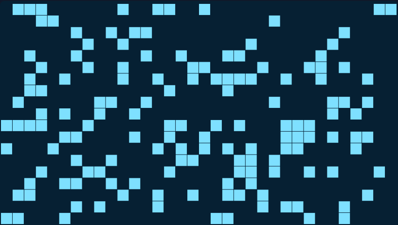

Music of life
František Špaček; projekt předmětu NI-CCC v zimním semestru 2025
Project idea
The goal was to do music synthesis from Conway's Game of life.

The simulation runs on a resizable board which is then dynamically mapped to tones. For example, the can be higher when the tile is closer to the top.
It could have a predictable melody when the life consists of oscillators or gliders, but it could also end up as chaos.
There are similar projects, but they tend to only synthesize from a small portion of the board, like a single line. This project uses every single cell.
Project result
i implemented a working version in the form of a web app. It contains the basic simulation, settings for size and speed, settings for sound and four modes of synthesis.
It's possible to record the music and download the result.
The app is available at: Music of Life
Git repository: music-of-life